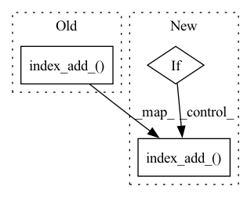

Pattern ID :33840
Before Change
pot[i]["dihedrals"] += E.cpu().sum().item()
forces[i].index_add_(0, self.par.dihedrals[:, 0], dihedral_forces[0])
forces[i].index_add_(0, self.par.dihedrals[:, 1], dihedral_forces[1])
forces[i].index_add_( 0, self.par.dihedrals[:, 2], dihedral_forces[2])
forces[i].index_add_(0, self.par.dihedrals[:, 3], dihedral_forces[3])
// TODO: 14 lj+ele energy and forces
nb_dist, nb_unitvec, _ = calculateDistances(spos, self.par.idx14, sbox)After Change
forces[i].index_add_(0, self.par.angles[:, 1], angle_forces[1])
forces[i].index_add_(0, self.par.angles[:, 2], angle_forces[2])
if "dihedrals" in self.energies and self.par.dihedrals is not None:
_, _, r12 = calculateDistances(
spos, self.par.dihedrals[:, [0, 1]], sbox
)
_, _, r23 = calculateDistances(
spos, self.par.dihedrals[:, [1, 2]], sbox
)
_, _, r34 = calculateDistances(
spos, self.par.dihedrals[:, [2, 3]], sbox
)
E, dihedral_forces = evaluateTorsion(
r12, r23, r34, self.par.dihedral_params
)
pot[i]["dihedrals"] += E.cpu().sum().item()
forces[i].index_add_(0, self.par.dihedrals[:, 0], dihedral_forces[0])
forces[i].index_add_(0, self.par.dihedrals[:, 1], dihedral_forces[1])
forces[i].index_add_( 0, self.par.dihedrals[:, 2], dihedral_forces[2])
forces[i].index_add_(0, self.par.dihedrals[:, 3], dihedral_forces[3])
if "1-4" in self.energies and self.par.idx14 is not None:
nb_dist, nb_unitvec, _ = calculateDistances(spos, self.par.idx14, sbox)In pattern: SUPERPATTERN
Frequency: 4
Non-data size: 3
Instances Fragment ID: 97071737
Project Name: torchmd/torchmd
Commit Name: c820ccb5eecc88823132ac9849d4d8397f567d61
Time: 2020-05-28
Author: stefdoerr@gmail.com
File Name: torchmd/forces.py
M Class Name: Forces
N Class Name: Forces
M Method Name: compute(5)
N Method Name: compute(5)
M Parent Class:
N Parent Class:
M File Name: torchmd/forces.py
N File Name: torchmd/forces.py
M Start Line: 112
M End Line: 130
N Start Line: 127
N End Line: 147
Before Change
// -> (Nbatch,Nelec,Norb)
ao = torch.zeros(nbatch, self.nelec,
self.norb, device=self.device)
ao.index_add_( 2, self.index_ctr, bas)
else:
// t0 = time()
// -> (Nbatch,Nelec,Nbas, Ndim)After Change
// contract the basis
// -> (Nbatch,Nelec,Norb)
if self.contract:
ao = torch.zeros(nbatch, self.nelec,
self.norb, device=self.device)
ao.index_add_( 2, self.index_ctr, bas)
else:
ao = bas
print("add : ", time()-t0) Fragment ID: 97071738
Project Name: nlesc-jcer/qmctorch
Commit Name: 1deda52cad9da0398f94d003b36f3263c67d52eb
Time: 2020-05-14
Author: nicolas.gm.renaud@gmail.com
File Name: qmctorch/wavefunction/atomic_orbitals.py
M Class Name: AtomicOrbitals
N Class Name: AtomicOrbitals
M Method Name: forward(5)
N Method Name: forward(5)
M Parent Class: nn.Module
N Parent Class: nn.Module
M File Name: qmctorch/wavefunction/atomic_orbitals.py
N File Name: qmctorch/wavefunction/atomic_orbitals.py
M Start Line: 169
M End Line: 234
N Start Line: 163
N End Line: 241
Before Change
x *= self.weight_partial_der
x = x.sum(1)
out_mat.index_add_( 1, self.index_partial_der_to_elec, x)
return out_mat
def _prod_unique_pairs(self, mat, not_el=None):After Change
if out_mat is None:
out_mat = torch.zeros(nbatch, self.nelec)
if len(self.index_partial_der) > 0:
x = djast[..., self.index_partial_der]
x = x.prod(-1)
x *= self.weight_partial_der
x = x.sum(1)
out_mat.index_add_( 1, self.index_partial_der_to_elec, x)
return out_mat
def _prod_unique_pairs(self, mat, not_el=None): Fragment ID: 97071740
Project Name: nlesc-jcer/qmctorch
Commit Name: a8002dd8e4f435edb49cebcc9253e62042d1f826
Time: 2020-05-19
Author: nicolas.gm.renaud@gmail.com
File Name: qmctorch/wavefunction/fast_jastrow.py
M Class Name: TwoBodyJastrowFactor
N Class Name: TwoBodyJastrowFactor
M Method Name: _partial_derivative(3)
N Method Name: _partial_derivative(3)
M Parent Class: nn.Module
N Parent Class: nn.Module
M File Name: qmctorch/wavefunction/fast_jastrow.py
N File Name: qmctorch/wavefunction/fast_jastrow.py
M Start Line: 367
M End Line: 372
N Start Line: 373
N End Line: 380
Before Change
// contract the basis
// -> (Nbatch,Nelec,Norb)
ao = torch.zeros(nbatch, self.nelec, self.norb, device=self.device)
ao.index_add_( 2, self.index_ctr, bas)
return ao
After Change
bas = d2R * Y + 2. * (dR * dY).sum(3) + R * d2Y
// product with coefficients and primitives norm
if jacobian:
// -> (Nbatch,Nelec,Nbas)
bas = self.norm_cst * self.bas_coeffs * bas
// contract the basis
// -> (Nbatch,Nelec,Norb)
ao = torch.zeros(nbatch, self.nelec, self.norb, device=self.device)
ao.index_add_( 2, self.index_ctr, bas)
else:
// -> (Nbatch,Nelec,Nbas, Ndim)
bas = self.norm_cst.unsqueeze(-1) * \ Fragment ID: 97071735
Project Name: nlesc-jcer/qmctorch
Commit Name: 7006f7140f0d5376e776668ff36f80b57cb3e46d
Time: 2019-12-27
Author: nicolas.gm.renaud@gmail.com
File Name: deepqmc/wavefunction/atomic_orbitals.py
M Class Name: AtomicOrbitals
N Class Name: AtomicOrbitals
M Method Name: forward(4)
N Method Name: forward(3)
M Parent Class: nn.Module
N Parent Class: nn.Module
M File Name: deepqmc/wavefunction/atomic_orbitals.py
N File Name: deepqmc/wavefunction/atomic_orbitals.py
M Start Line: 198
M End Line: 218
N Start Line: 167
N End Line: 266